Evaporators
5 Products
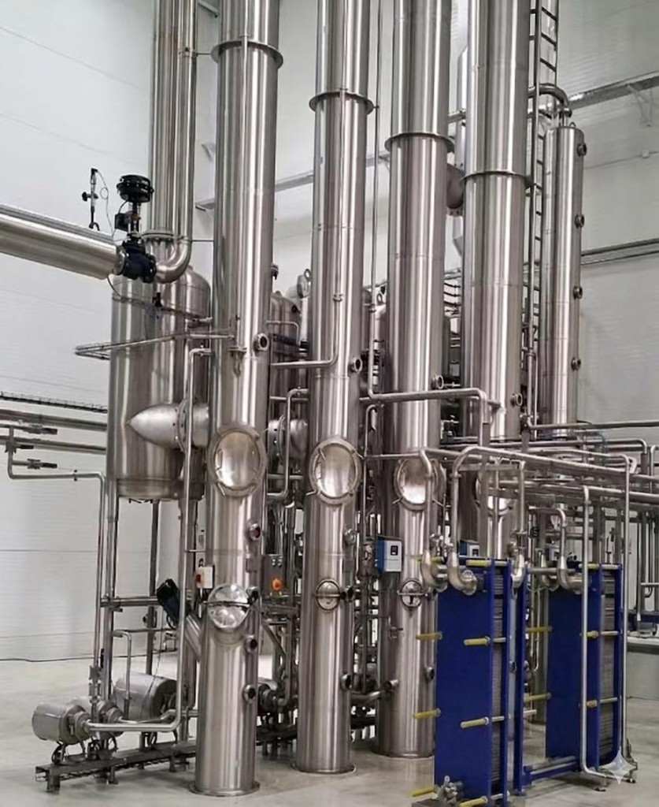
EvaporatorsFalling Film Evaporator
High-efficiency evaporator ideal for heat-sensitive products. The liquid forms a thin film on tube inner surfaces, enabling gentle and rapid evaporation at low temperatures. Available in single, double, triple, and multi-effect configurations.
Capacity
500 - 50,000 L/hr
Effects
Single to 7-Effect
Material
SS 304 / SS 316L / Ti
Standard
ASME / IS / CE
DairyPharmaFoodChemicalJuice
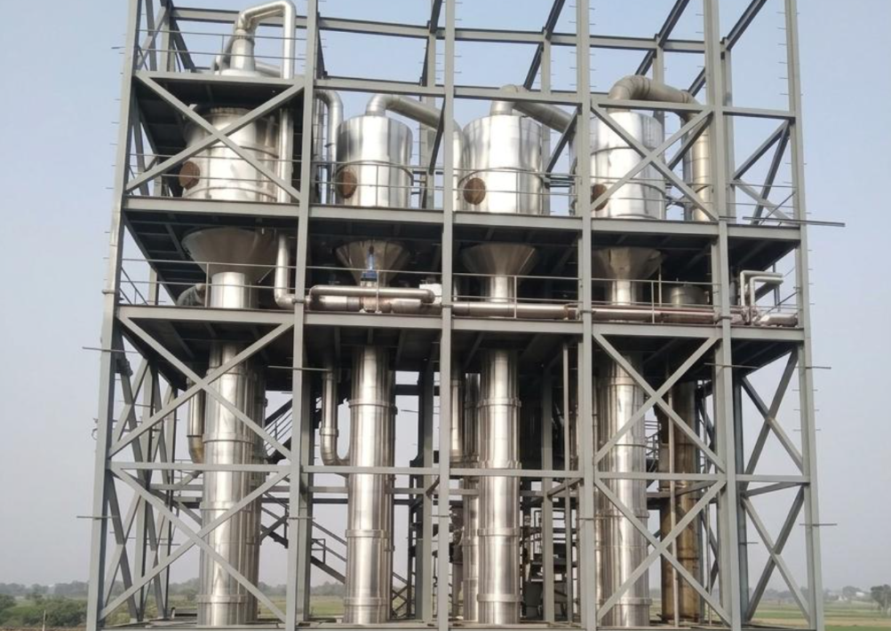
EvaporatorsForced Circulation Evaporator
Designed for viscous, scaling, or crystallizing liquids. Forced circulation ensures high velocity through the heat exchanger tubes, preventing scale deposition and enabling efficient concentration of difficult fluids.
Capacity
1,000 - 30,000 L/hr
Temp. Range
40 - 120 deg C
Pressure
Vacuum to 3 Bar
Pump
Axial / Centrifugal
PharmaDistilleryTextileAgro
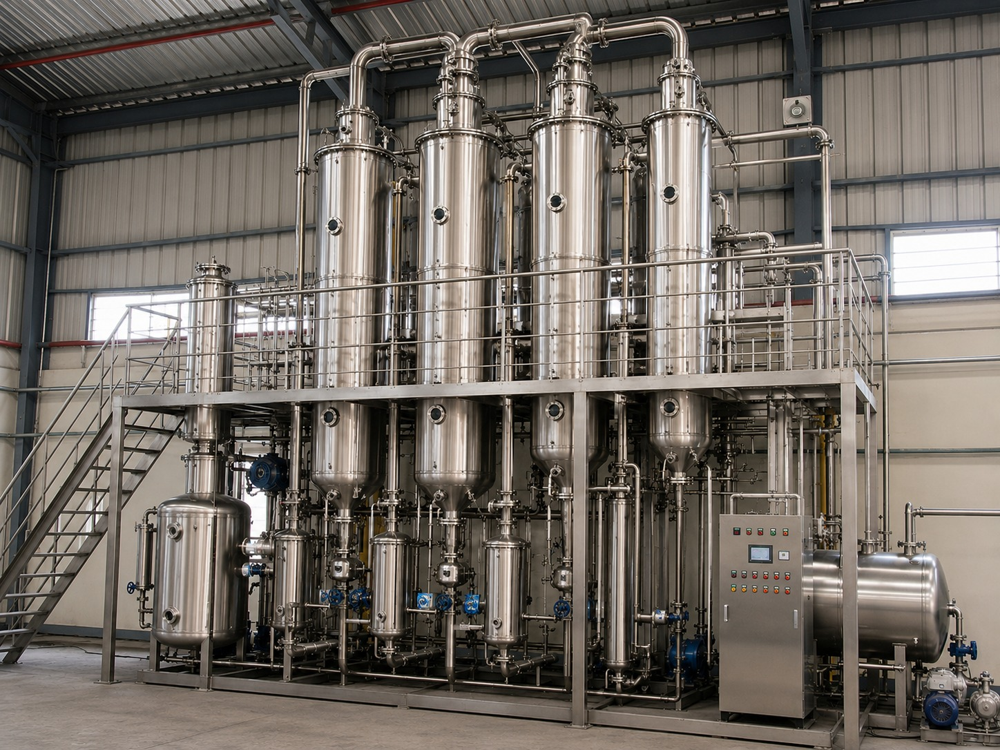
EvaporatorsRising Film Evaporator
Vertical tube evaporator where liquid and vapor rise together through tubes in a climbing film pattern. Suitable for non-viscous, non-scaling liquids requiring gentle treatment at moderate concentrations.
Capacity
500 - 20,000 L/hr
Tube Length
3 - 9 m
Material
SS 304 / 316L
Operation
Continuous
SugarPulp & PaperCausticFood
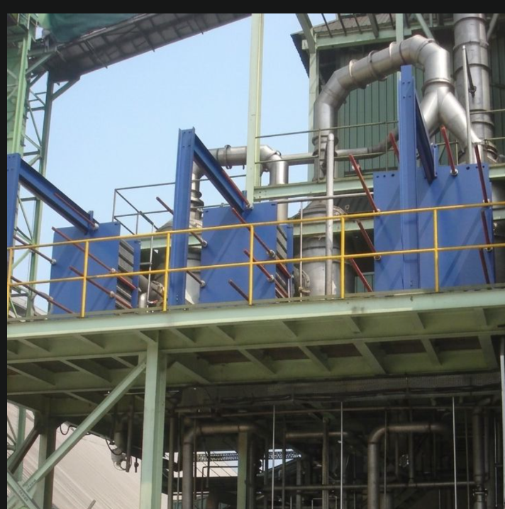
EvaporatorsPlate Type Evaporator
Compact, high-efficiency plate-type evaporator with corrugated plate heat exchange surfaces. Excellent thermal performance with low liquid hold-up - ideal for small to medium dairy and food applications.
Capacity
200 - 10,000 L/hr
Design
Gasketed / Welded
Footprint
Very Compact
CIP
CIP Ready
SugarJuiceCausticBeverages
 Evaporators
Evaporators
Batch Evaporator (Vacuum Pan)
Jacketed vacuum pan evaporator for batch operations requiring precise concentration control. Designed with a vacuum system to reduce boiling point - protecting heat-sensitive products during concentration.
Capacity
100 - 5,000 L/batch
Vacuum
0.1 - 0.95 bar(g)
Jacket
Steam / Hot Water
Agitator
Optional
PharmaConfectioneryNutraceuticals
Dryers
5 Products
 Dryers
Dryers
Spray Dryer (Nozzle / Rotary Disc)
Convert liquid feed into free-flowing powder in a single operation. Available in nozzle atomization and rotary disc atomization designs - producing powders with precise particle size distribution for dairy, food, pharma, chemical, and Starch applications.
Evaporation Capacity
10 - 5,000 kg/hr
Inlet Air Temp
80 - 280 deg C
Moisture
< 3 - 5% (w.b.)
Atomizer
Nozzle / Disc
DairyFoodPharmaStarchChemical
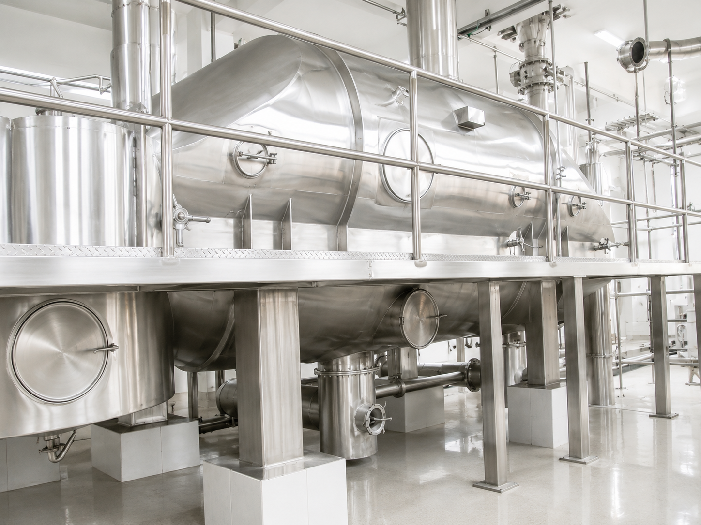
DryersFluidized Bed Dryer (FBD)
Fluidized bed technology for granular, crystalline, and powdery materials. Provides uniform, gentle drying with precise moisture control - available in continuous configurations for dairy and food.
Bed Area
0.5 - 20 m2
Inlet Temp
40 - 180 deg C
Operation
Continuous
GMP
GMP Available
DairyFoodPharmaChemical
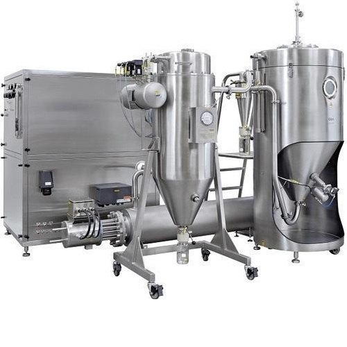
DryersClosed Circuit Dryer
Inert gas or solvent-laden atmosphere dryer for products that cannot be exposed to atmospheric oxygen. Designed for solvent recovery, preventing emission and enabling safe handling of explosive or oxidation-sensitive materials.
Atmosphere
N2 / Inert Gas
Solvent Recovery
Up to 95%+
Safety
ATEX Available
Control
PLC Automated
Pharma APIFine Chemicals
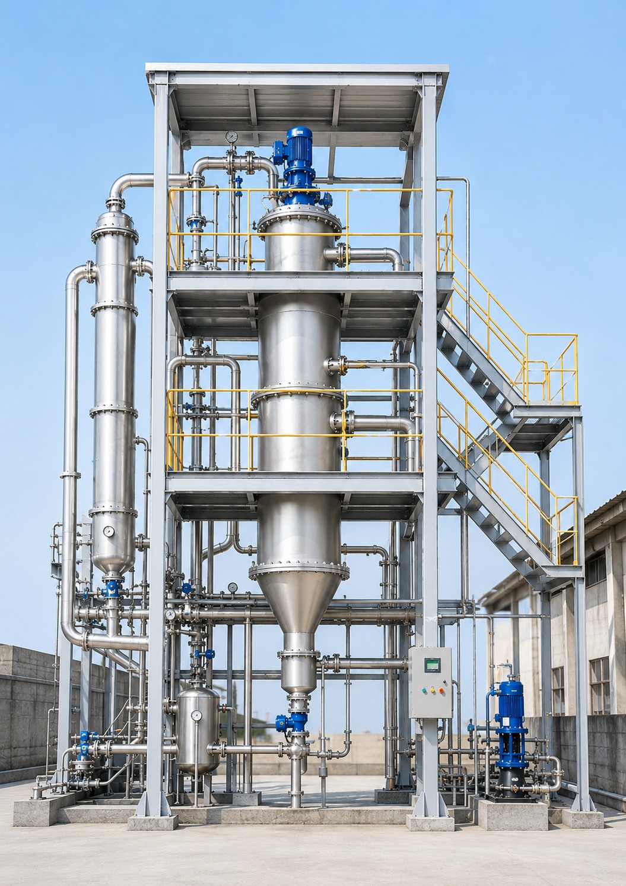
DryersAgitated Thin Film Dryer (ATFD)
Continuous dryer for viscous, heat-sensitive, and fouling materials. A rotating blade assembly spreads feed into a thin turbulent film on the heated wall, enabling rapid evaporation under vacuum - ideal for ZLD, effluent salts, and high-value products.
Feed Form
Slurry / Viscous
Heating Area
0.5 - 30 m2
Operation
Vacuum / Continuous
Material
SS 304 / 316L
ZLD / EffluentPharmaSpecialty ChemicalAgrochemicalDistillery
 Dryers
Dryers
Spin Flash Dryer
Ideal for drying paste, filter cake, sludge, and wet granular materials directly without pre-drying. The spinning action provides intense heat and mass transfer, achieving dry powder in a compact system footprint.
Feed Form
Paste / Cake / Sludge
Evap. Rate
50 - 2,000 kg/hr
Residence
1 - 5 Seconds
Material
MS / SS 304
ChemicalPigmentsCeramicsClayPharma
Dairy Processing Plants
6 Products
 Dairy
Dairy
Complete Milk Processing Plant
Turnkey dairy plant from raw milk reception to final product packaging. Includes all processing equipment - pasteurizer, homogenizer, separator, storage tanks, UHT, and packaging-ready output with CIP integration.
Capacity
5 - 200 KLD
Products
Liquid Milk, Cream
Standard
FSSAI / 3-A
Automation
Full PLC/SCADA
Dairy PlantsCo-operativesFMCG
 Dairy
Dairy
Milk Chilling Plant
Industrial-scale milk chilling plant for rapid and hygienic cooling of large volumes of raw milk received at dairy processing facilities. Integrated refrigeration system with plate heat exchangers, insulated storage silos, and automated temperature monitoring ensures milk reaches 4?C rapidly.
Capacity
5 - 200 KLD
Cooling System
PHE - Refrigeration
Outlet Temp
4 ? 1 deg C
Standard
FSSAI / BIS / 3-A
Dairy PlantsCo-operativesMilk Unions
 Dairy
Dairy
Milk Pasteurizer (HTST / LTLT)
High-Temperature Short-Time (HTST) and Low-Temperature Long-Time (LTLT) pasteurizers for safe milk processing. Plate-type heat exchangers ensure precise temperature control, minimal nutritional loss, and extended shelf life.
Type
HTST / LTLT / UHT
Capacity
1,000 - 50,000 L/hr
Temp (HTST)
72 deg C / 15 sec
CIP
Auto CIP Included
Pasteurized MilkFlavored MilkCream
 Dairy
Dairy
Milk Deodorizer
Vacuum deodorizer designed to remove off-flavors, taints, and volatile compounds from milk and dairy products. Improves product quality and shelf life - essential for premium dairy brands and exports.
Capacity
2,000 - 30,000 L/hr
Vacuum
0.02 - 0.05 bar(a)
Temp
65 - 78 deg C
Material
SS 316L Mirror
UHT MilkWheyButter MilkSkimmed Milk
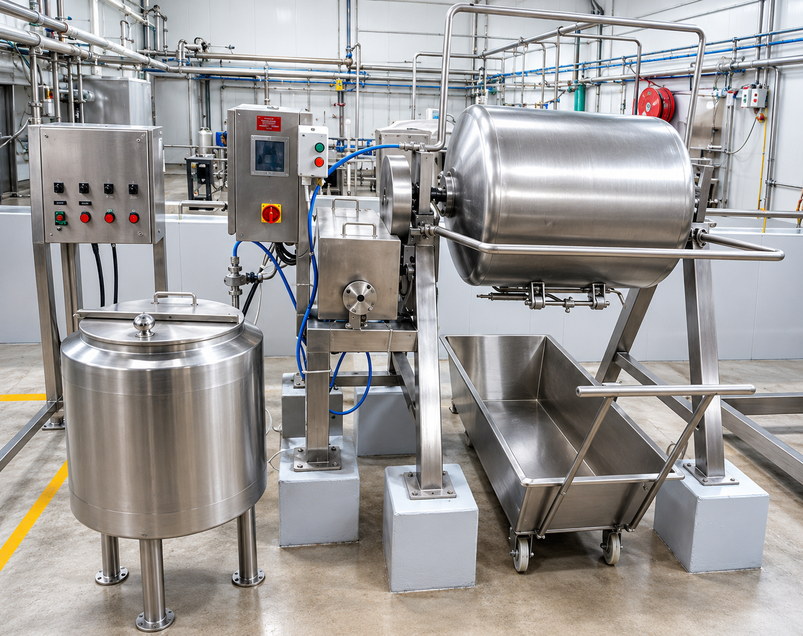
DairyButter Processing Unit
Complete butter processing line including cream separation, pasteurization, aging, and continuous butter-making machine. Designed for high-throughput production of table butter, white butter, and salted butter with precise moisture control and CIP provision.
Capacity
500 - 20,000 kg/day
Moisture
< 16% (As Per Std.)
Material
SS 304 / SS 316L
Standard
FSSAI / 3-A
Table ButterWhite ButterSalted Butter
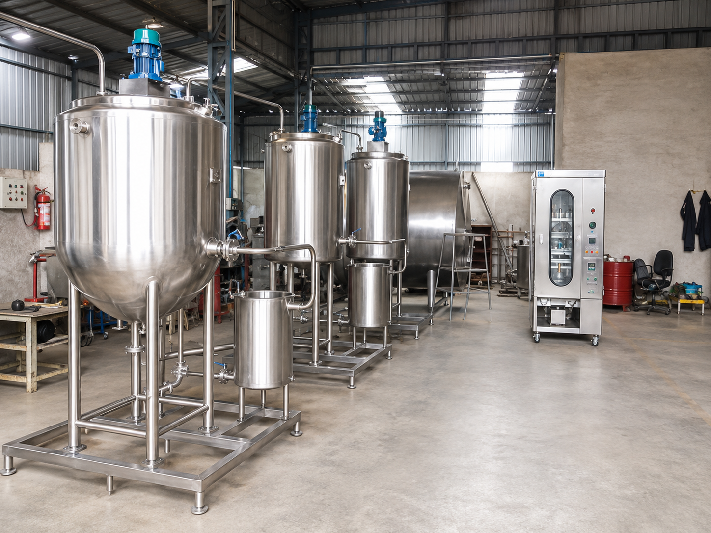
DairyGhee Making Plant
Complete turnkey ghee manufacturing plant covering cream-to-ghee processing ? butter melting, clarification, filtration, and filling. Produces ISI-grade pure ghee with consistent color, flavor, and free fatty acid levels. Suitable for large dairy co-operatives and FMCG ghee brands.
Capacity
100 - 5,000 kg/hr
FFA
< 0.3% (Oleic Acid)
Material
SS 316L Inner
Standard
AGMARK / FSSAI
Pure GheeCo-operativesFMCG Brands
Milk Processing Equipment
3 Products
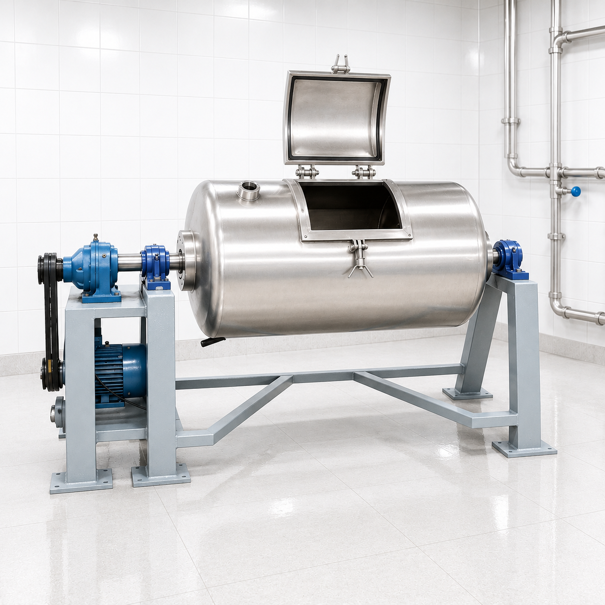
Milk EquipmentButter Churner
Industrial-grade stainless steel butter churner for converting cream into butter through continuous or batch churning process. Designed with SS 304/316L contact parts, variable speed drive, and CIP provision for hygienic and efficient butter production.
Capacity
100 - 5,000 L/batch
Material
SS 304 / SS 316L
Drive
VFD
Standard
FSSAI / 3-A
ButterWhite ButterCo-operatives
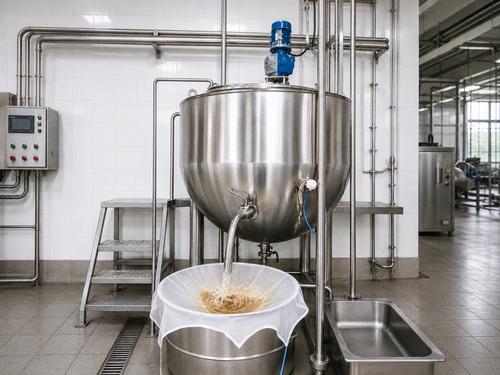
Milk EquipmentGhee Kettle
Steam-jacketed ghee clarification kettle for melting and clarifying butter into pure ghee. Designed with SS 316L inner lining, agitator with scraper blades, steam/hot-water jacket, and tilting mechanism for easy discharge and hygienic cleaning.
Capacity
100 - 2,000 L
Heating
Steam / Hot Water
Material
SS 316L Inner
Agitator
Scraper Blade Type
GheeClarified ButterDairy Plants
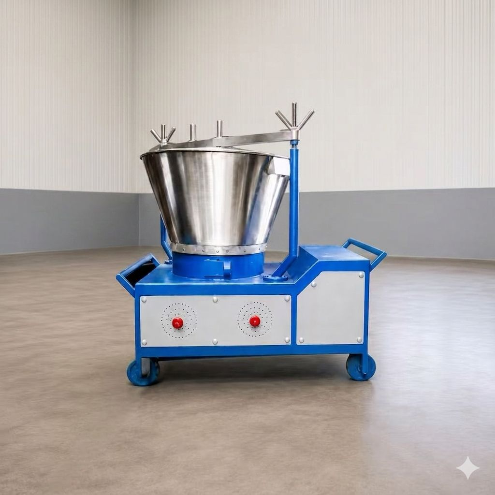
Milk EquipmentKhoya Making Machine
Continuous or batch-type stainless steel khoya (mawa) making machine for concentrating milk solids by evaporation. Equipped with steam-jacketed pan, motorized scraper agitator, and automated temperature control to achieve consistent khoya texture and color.
Capacity
50 - 1,000 kg/hr
Type
Batch / Continuous
Material
SS 304 / SS 316L
Control
Auto Temp. Control
Khoya / MawaMithai UnitsFMCG
Dairy & Food Plant Equipment
3 Products
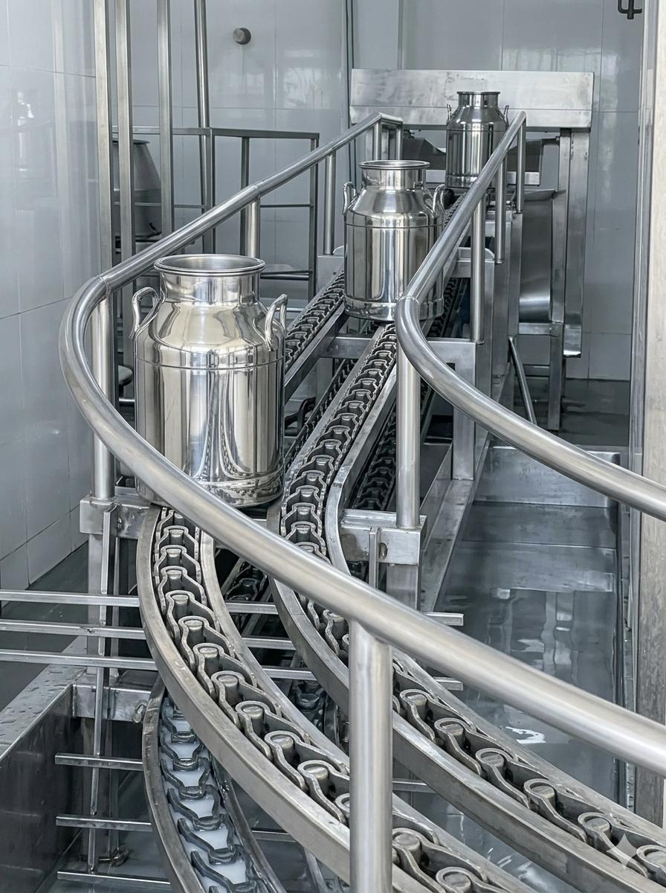
Dairy EquipmentMilk Can Conveyor
Automated stainless steel milk can conveyor system for efficient handling, transportation, and unloading of milk cans at dairy collection points and processing plants. Reduces manual handling, prevents spillage, and improves throughput with hygienic SS 304 construction and variable-speed drive.
Can Capacity
10 - 50 L Cans
Speed
Variable (VFD)
Material
SS 304 Structure
Type
Roller / Belt / Chain
Co-operativesMilk UnionsCollection Centres
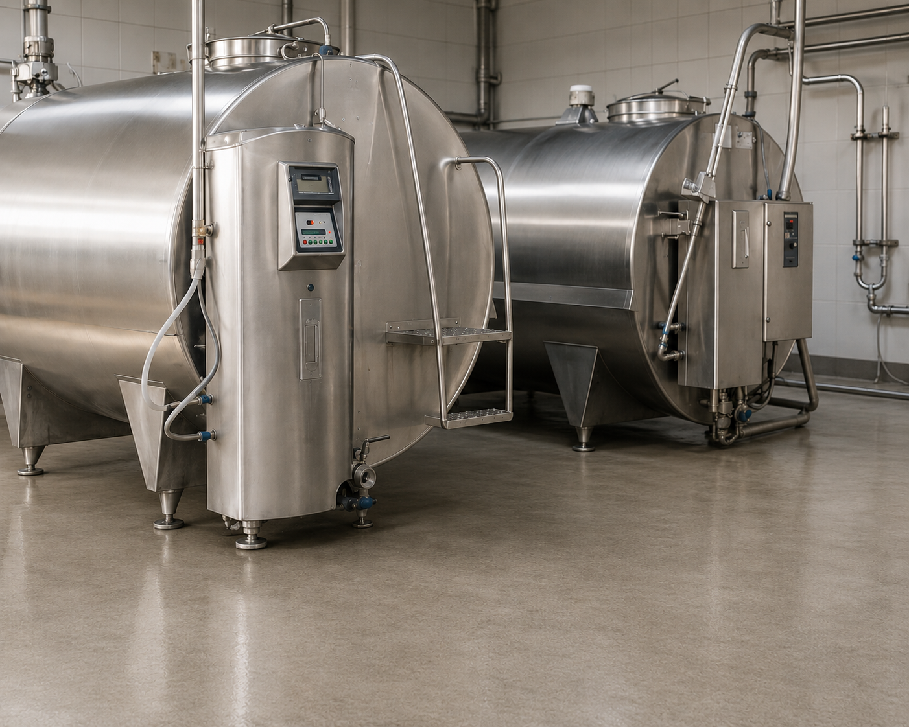
Dairy EquipmentBulk Milk Cooler (BMC)
Direct expansion (DX) bulk milk cooler for rapid chilling of freshly collected raw milk at village-level milk collection centres (MCC). Cools milk from 35?C to 4?C within 3 hours, preventing bacterial growth and maintaining freshness. Available in open-top and closed-top designs with CIP provision.
Capacity
300 - 10,000 L
Cooling
Direct Expansion
Temp
4 ? 1 deg C
Standard
BIS / FSSAI / AMUL
Village MCCAMUL PatternRural Dairy
 Dairy Equipment
Dairy Equipment
Crystallization Tank
Jacketed stainless steel crystallization tank for controlled cooling and crystal formation in dairy, food, and chemical processes. Designed with agitator, precise temperature control, and hygienic SS 304/316L construction for uniform crystal size and consistent product quality.
Capacity
500 - 20,000 L
Cooling
Jacket / Coil
Material
SS 304 / SS 316L
Agitator
Anchor / Paddle
DairyFoodSugarChemical
Waste Management
6 Products
 Waste Management
Waste Management
ETP/STP Treatment Plants
Complete effluent treatment plant (ETP) and sewage treatment plant (STP) solutions for industrial and municipal wastewater. Primary, secondary, and tertiary treatment with aeration, clarification, filtration, and sludge handling to meet CPCB discharge norms.
Capacity
10 - 500 m3/day
Treatment
Primary / Secondary / Tertiary
Compliance
CPCB / SPCB
Control
PLC / SCADA
PharmaChemicalFoodMunicipal
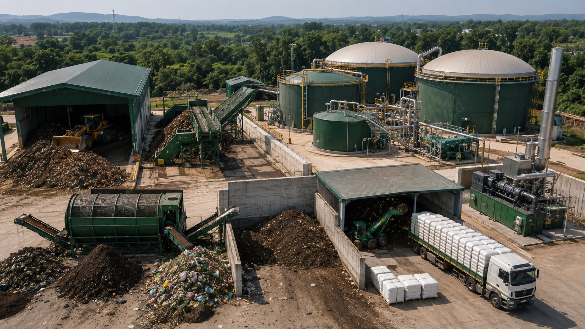
Waste ManagementBiomass Solid Waste Treatment Plant
Integrated biomass and solid waste treatment plant for agricultural residue, industrial solid waste, and organic rejects. Includes shredding, drying, compaction, and energy recovery for sustainable waste-to-resource conversion.
Capacity
1 - 50 TPD
Feed
Biomass / MSW / Organic
Process
Shred / Dry / Compact
Output
Fuel / Compost / RDF
SugarPaperFoodMunicipal
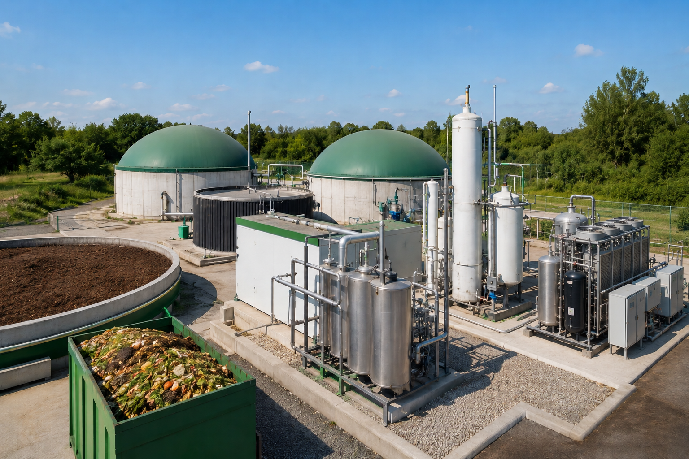
Waste ManagementBiogas and CNG Plant
Turnkey biogas plant with anaerobic digester, gas storage, purification, and CNG compression for converting organic waste and biomass into clean fuel. Suitable for dairy waste, food processing rejects, and agricultural biomass.
Gas Output
50 - 5,000 m3/day
Feed
Organic / Biomass / Slurry
Purification
H2S / CO2 Removal
End Product
Biogas / Bio-CNG
DairyDistilleryFoodMunicipal
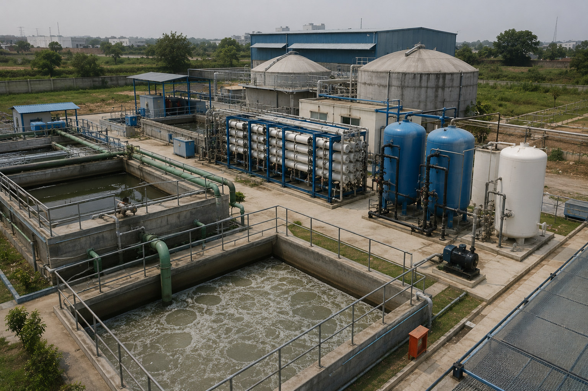
Waste ManagementWTP/UF/RO/Softener Plants
Complete water treatment plants including WTP, ultrafiltration (UF), reverse osmosis (RO), and softener systems for industrial process water, boiler feed, and drinking water with automated backwash and chemical dosing.
Capacity
1 - 200 m3/hr
Technology
WTP / UF / RO / Softener
Output TDS
As Per Requirement
Control
PLC / Auto Dosing
PharmaFoodBoiler FeedDrinking Water
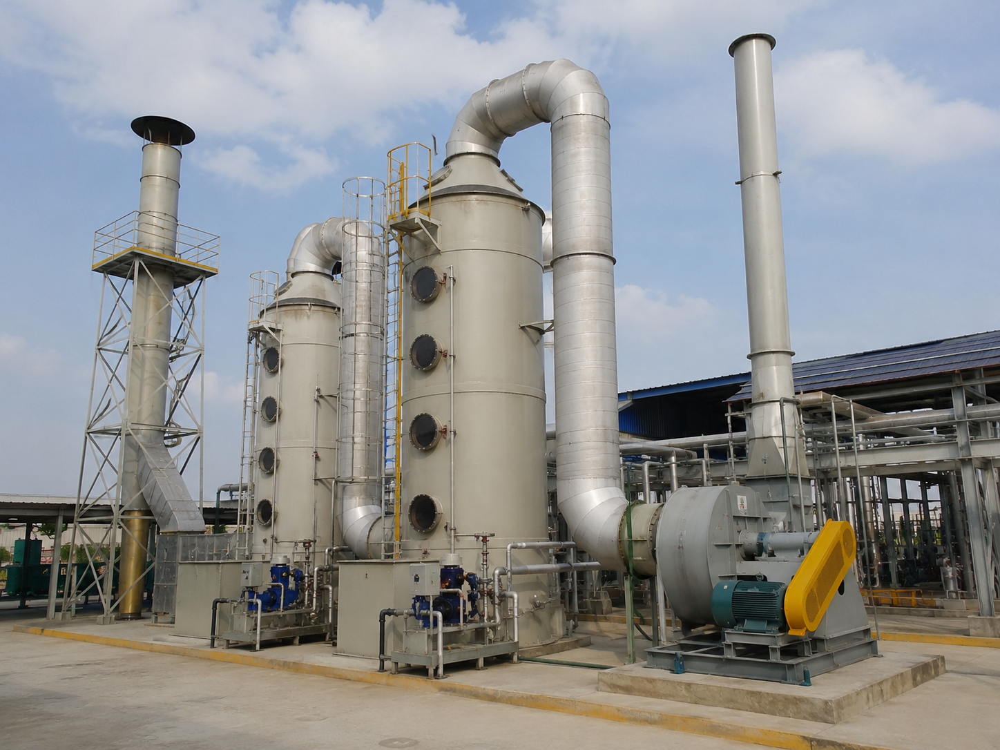
Waste ManagementScrubber Systems
Wet and dry scrubber systems for removal of particulates, acid gases, VOCs, and odorous compounds from industrial exhaust streams. Custom-designed for boiler flue gas, chemical reactors, and process vent lines.
Gas Flow
1K - 100K Am3/hr
Type
Wet / Dry / Packed Bed
Removal
PM / SO2 / HCl / VOC
Material
SS / FRP / PP
ChemicalPharmaBoilerFood
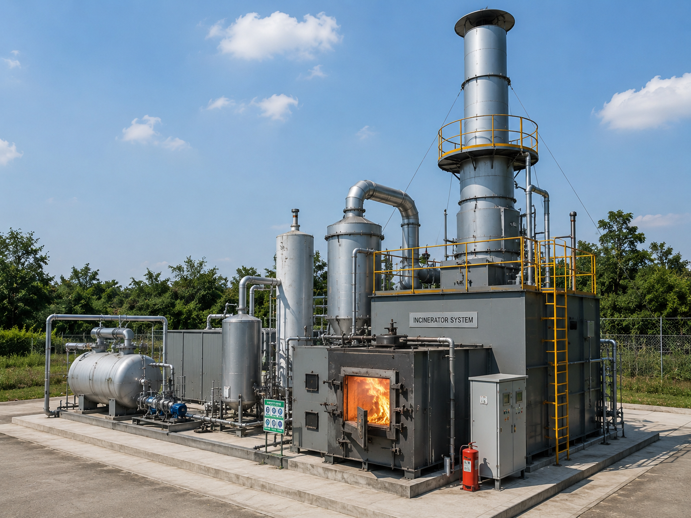
Waste ManagementIncinerator System
Industrial incinerator systems for safe thermal destruction of hazardous and non-hazardous solid and liquid waste. Primary and secondary combustion chambers with scrubber integration and emission monitoring for CPCB compliance.
Capacity
50 - 2,000 kg/hr
Chambers
Primary + Secondary
Waste Type
Solid / Liquid / Sludge
Emission
CPCB Compliant
PharmaChemicalHospitalIndustrial
Heat Exchangers
2 Products
 Heat Transfer
Heat Transfer
Shell & Tube Heat Exchanger
Heavy-duty industrial heat exchangers designed per TEMA standards. Available in single-pass, multi-pass, U-tube, and fixed tubesheet configurations for heating, cooling, condensing, and preheating applications across all industries.
Duty
10 kW - 10 MW
Design Pressure
Up to 100 Bar
Standard
TEMA / ASME
MOC
CS / SS / Alloy
Process HeatingCondensersReboilers
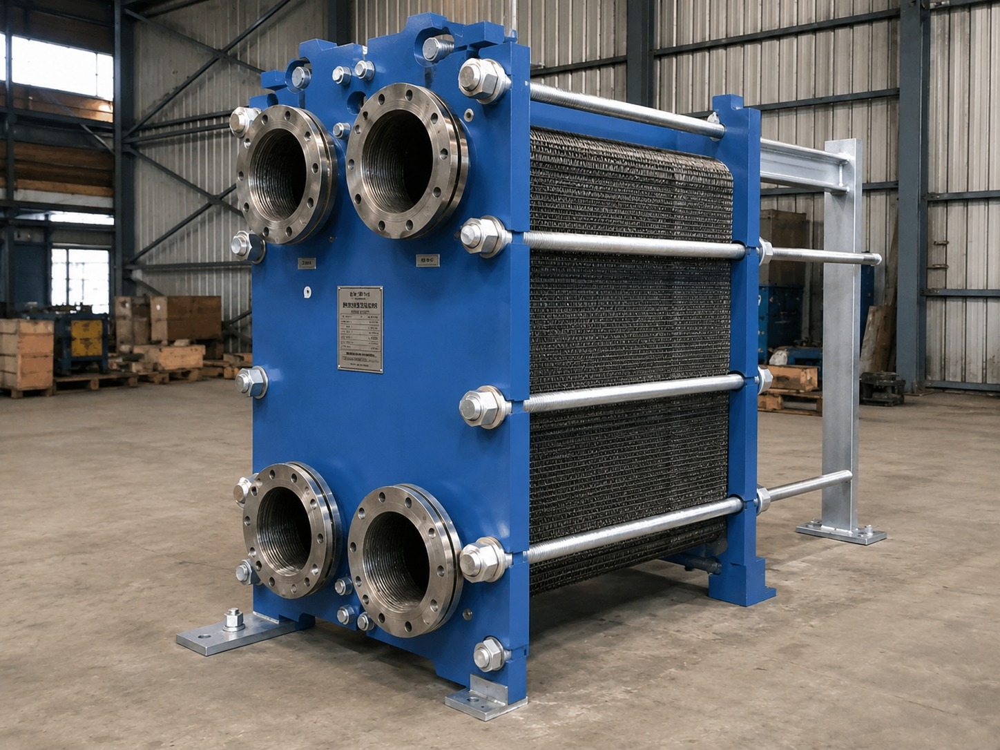
Heat TransferPlate Heat Exchanger (PHE)
Compact, high-efficiency gasketed plate heat exchangers offering superior thermal performance in minimal footprint. Easy cleaning and maintenance, expandable capacity, ideal for dairy, food, beverage, and HVAC applications.
Flow Rate
Up to 2,000 m3/hr
Temp Range
-35 to +200 deg C
Plates
Titanium / SS 316
Type
Gasketed / BHE
DairyBeveragesHVACPharma
CIP & Cleaning Systems
1 Product
 Cleaning Systems
Cleaning Systems
Automated CIP System
Fully automated Clean-in-Place systems for hygienic cleaning of process lines, tanks, heat exchangers, and equipment without disassembly. PLC-controlled sequences for pre-rinse, caustic wash, acid wash, and final rinse - chemical dosing included.
Standard
3-A / EHEDG
Tanks
2 to 4-Tank System
Control
PLC + HMI
Validation
FDA-Ready
DairyBeveragePharmaFood
Pressure Vessels & Storage Tanks
2 Products
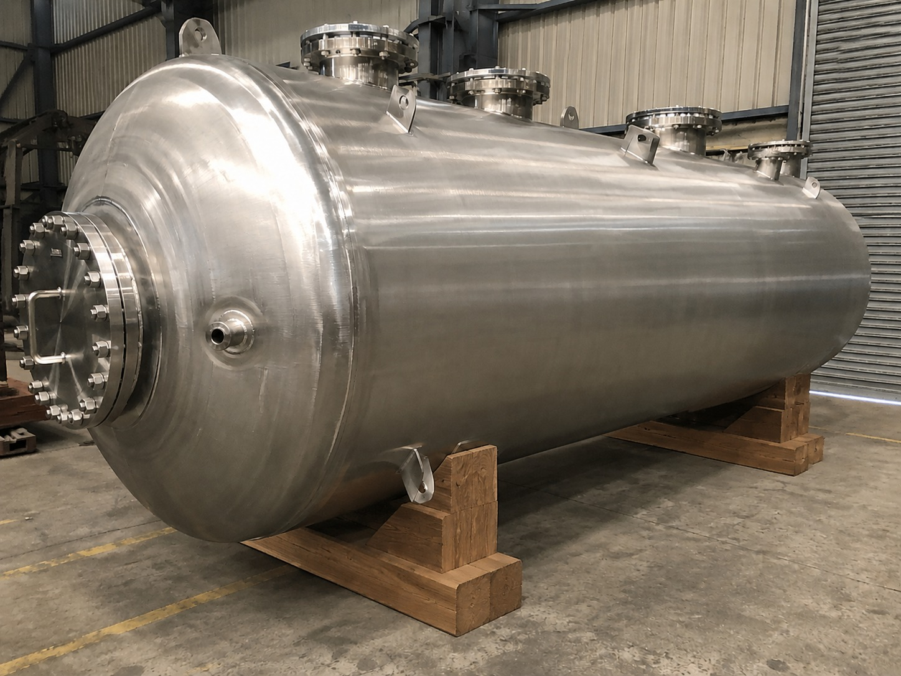
VesselsPressure Vessels (ASME / IBR)
Custom-designed and fabricated pressure vessels for storage and processing of gases and liquids under pressure. Manufactured to ASME Section VIII Div. 1 and IBR standards with full material traceability and NDT testing.
Volume
100 L - 200 m3
Pressure
FV to 300 bar
MOC
CS / SS / Alloy
Inspection
Third-Party
ChemicalPharmaOil & GasPower
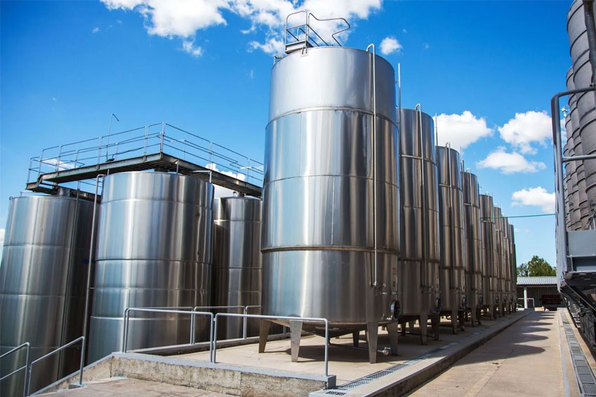
TanksStainless Steel Storage Silos
Hygienic SS 304/316L storage tanks with mirror-polished internal surfaces, insulation, agitators, CIP spray balls, and level instrumentation. Available in vertical, horizontal, and silos configurations for food, dairy, and pharma applications.
Capacity
500 L - 200,000 L
Material
SS 304 / SS 316L
Finish
Ra <= 0.4 - 0.8 um
Insulation
PUF / Rock Wool
DairyFoodPharmaChemical